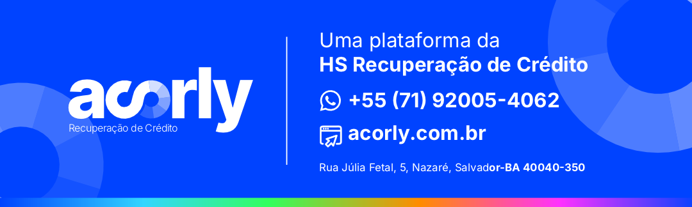

Prezado(a) gestor(a),
Toda empresa que vende com mensalidade ou parcelamento convive com clientes em atraso. Na correria do dia a dia, a cobrança fica para depois, a planilha cresce e o dinheiro que já era seu deixa de entrar. Cobrar também é delicado: ninguém quer constranger o cliente nem perder o relacionamento.
A Acorly, plataforma da HS Recuperação de Crédito, existe para resolver isso de forma organizada, cordial e transparente, com uma regra que não muda: o seu cliente paga direto na conta da sua empresa. Nós não recebemos nem intermediamos valores.
A nossa equipe cobra por você, em nome da sua empresa, por WhatsApp e e-mail, dentro dos limites de desconto e parcelamento que você definir. Você acompanha tudo pelo painel e paga uma comissão apenas sobre o que for recuperado.
Sua equipe cobra pelo sistema: cadastro de devedores, mensagens prontas, simulador de acordos, Pix gerado automaticamente e relatórios. A partir de R$ 49,90 por mês, com 7 dias grátis e sem comissão sobre o que recuperar.
Percentual sobre os valores efetivamente recebidos, conforme o tempo de atraso da dívida no dia do encaminhamento: 10% até 90 dias · 15% de 91 a 180 dias · 20% de 181 a 365 dias · 25% acima de 1 ano. Se nada for recebido, não há comissão. As condições finais ficam no contrato.
Quanto a inadimplência está custando para a sua empresa?
Calcule em 30 segundos em acorly.com.br/calculadora ou peça o diagnóstico gratuito da sua carteira em acorly.com.br/diagnostico: em até 2 dias úteis mostramos quanto pode ser recuperado, em quanto tempo e quanto custaria.
Prefere conversar? Fale com a gente pelo WhatsApp (71) 92005-4062 ou pelo e-mail contato@acorly.com.br.
Será um prazer conhecer a realidade da sua empresa e mostrar, com números, como podemos ajudar.
Atenciosamente,
